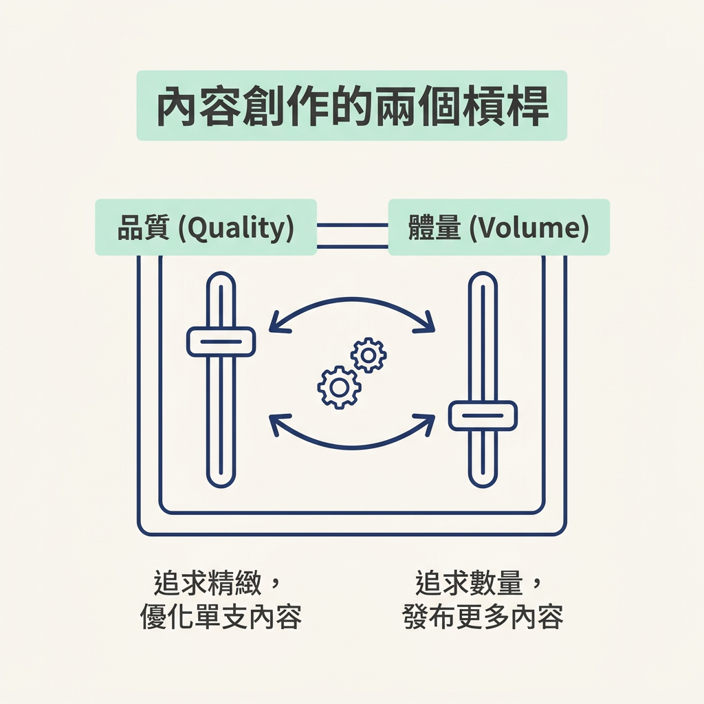
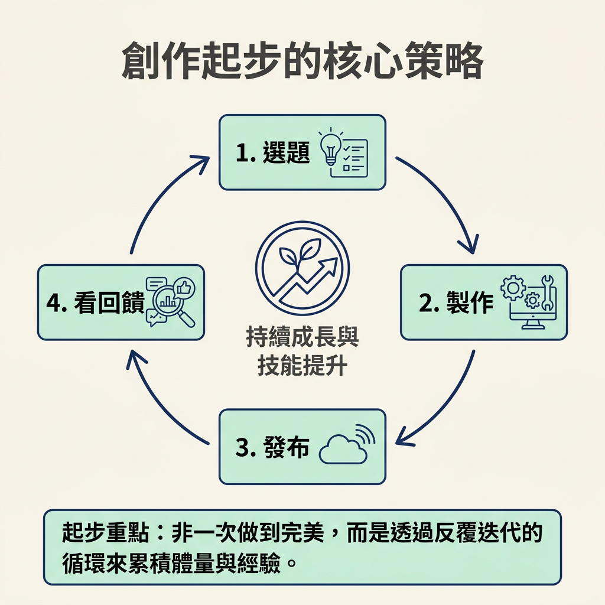

看完這一節，你能說出內容創作的兩個槓桿：品質與體量，也能說明為什麼 Wk2 要先從「品質」下手。
Wk1 你處理的是「為誰而做」：確定內容定位、想講給誰聽，以及大致要談什麼方向。接下來的 Wk2，要回答另一個問題：這些點子要怎麼變成真正發布出去的內容？
在打開剪輯軟體、研究要買哪顆麥克風之前，先認識內容創作的兩個槓桿。許多新手只盯著其中一個，結果越做越卡，甚至乾脆放棄。這一節會先說清楚兩個槓桿各自代表什麼，以及它們如何互相拉扯，讓後面五節有共同的起點。
講師在 Wk2 一開始就提出這個框架：內容創作有兩個槓桿，第一個是品質（quality），也就是每一則內容完成得多精緻；第二個是體量（volume），也就是你發布了多少內容。
可以把它們想成混音器上的兩根推桿。往品質那邊推，你會想把每支影片修得更好；往體量那邊推，你會想多完成幾支、讓更多內容上線。

但對初學者來說，這兩根推桿常常會互相拉扯。時間和心力有限，當你把大部分精神都花在打磨一支影片，能發布的支數自然就少了。講師形容，品質和體量位在光譜的兩端：新手一旦只追求品質，體量往往就跟著掉下來。
講師的答案很直接：技能要變好，靠的是反覆迭代（iteration），也就是做出內容、發布出去，再根據結果調整。你沒辦法只在腦中想像，就把第一支影片變成高手作品；你得多做幾支，每次修正一點，慢慢練出手感。
所以問題不是「品質和體量哪個比較高尚」，而是「起步時該先把力氣放在哪邊」。對剛開始創作的人來說，應該先增加體量。你需要的不是一支完美影片，而是一次又一次完成選題、製作、發布、看回饋的循環。

| 品質（quality） | 體量（volume） | |
|---|---|---|
| 你調整的行為 | 把每一支修得更精緻 | 把更多支發出去 |
| 常見的誤解 | 要先夠好才能發 | 發太多會被平台懲罰 |
| 新手該怎麼擺 | 先拆掉它帶來的心理門檻 | 真正該優先增加的那一邊 |
| 代價與好處 | 時間大量花在打磨，發布支數變少 | 單支完成度可能較低，但迭代速度更快 |
你可能會問：既然體量才是起步時該增加的，為什麼這一週先講品質？這正是講師安排順序的用意。不是因為品質比較重要，而是因為品質常常是新手最大的心理卡點。
很多人還沒開始，就被「我做得還不夠好」擋住，連第一支內容都發不出去。沒有第一支，就無從累積體量。因此，Wk2 先拆解對品質的錯誤想像，讓你能開始行動，體量才有機會慢慢增加。這一節先認識兩個槓桿，接下來幾節會繼續處理品質這一邊。
內容創作有兩個槓桿：品質與體量。對新手來說，它們常常互相拉扯：心力越集中在打磨每一支，能發布的內容就越少。技能的進步來自反覆迭代與持續產出，因此起步時要增加體量。但許多新手真正卡住的，是對品質的錯誤想像，所以這一週先從拆解品質門檻開始。
既然品質是常見的卡點，下一步就來正面拆解它：看看「要先達到某種品質才能發布」這個念頭，為什麼其實站不住腳。